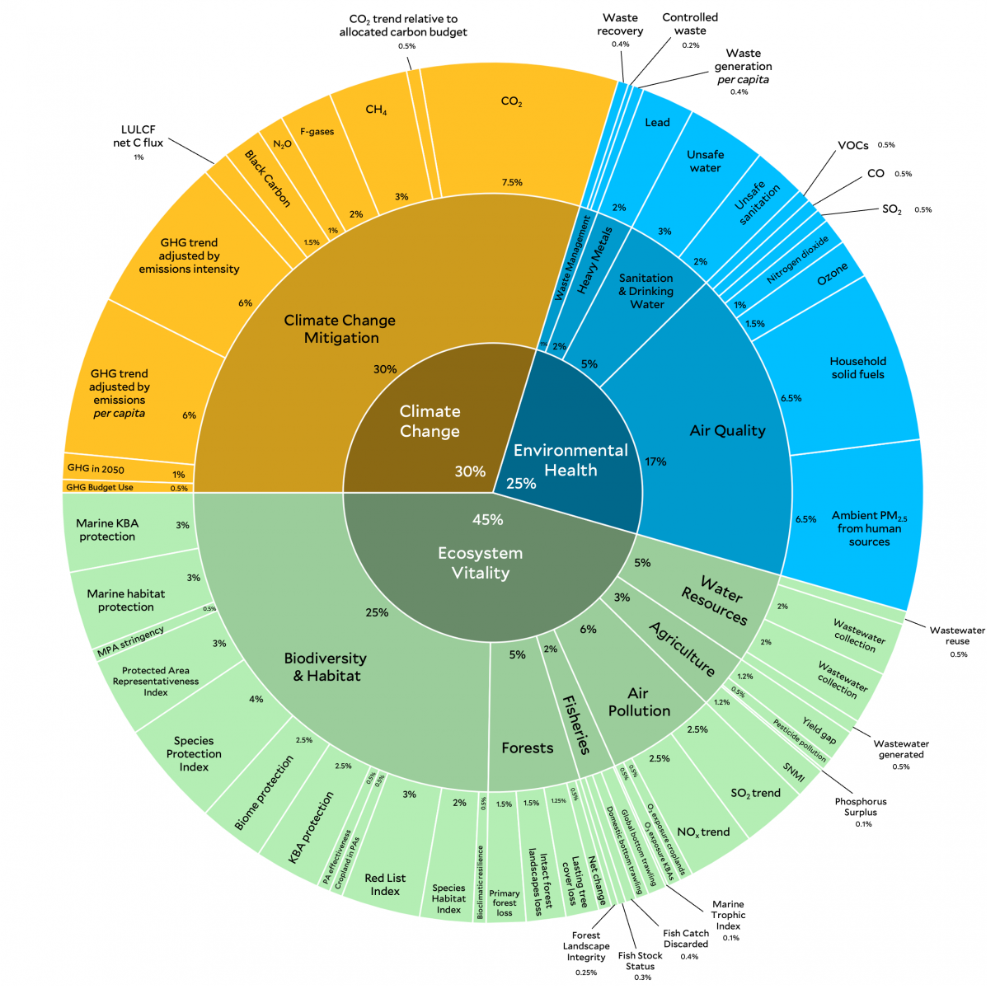

An AI-powered pipeline to discover new data sources for hard-to-measure environmental indicators
Sam Kouteili • 2026

180 countries, 58 indicators — but for many indicators the data is sparse, stale, or modeled rather than measured.
| Indicator | Data Gap |
|---|---|
| Waste Recovery Rate | 56 countries imputed 1 |
| Wastewater Reused | Single year (2015) 2 |
| Pesticide Pollution Risk | Only 2 time points 3 |
| Forest Landscape Integrity | Single snapshot (2020) 4 |
1 2024 EPI Technical Appendix, pp. 67–68 • 2 p. 125 • 3 p. 119 • 4 p. 106
A variable that tracks something we can't easily measure directly — because the two are causally linked.
During the pandemic, SARS-CoV-2 concentrations in sewage predicted infection surges days before clinical testing data — cheaper, faster, and more comprehensive than individual testing.
We give the system an EPI indicator plus curated domain knowledge, and it automatically researches potential proxies, formalizes them as testable hypotheses, and then statistically verifies each one.
For Unsafe Drinking Water: the system researched 8 candidate proxies drawn from traditional surveys, satellite imagery (VIIRS, MODIS), and trade flows — pharmaceutical imports (UN Comtrade, HS 3004 retail medicaments) should track water-related illness. Tested across 177 countries (n = 1,929), the pipeline found a significant inverse rank correlation (Spearman ρ = −0.55).
8 candidate proxies tested — from satellite imagery and trade flows to traditional surveys. Interactive dashboard auto-generated by the pipeline.
We have no ground truth to verify our discoveries against — but every verified hypothesis populates a knowledge graph. Nodes are variables; edges carry direction, strength, and functional form.
As the graph grows, the relationships validate each other:
Green = positive • Red = negative • Amber dashed = flagged
Built automatically from pipeline outputs across all indicators run so far.
Questions & discussion
Sam Kouteili • sam.kouteili@yale.edu